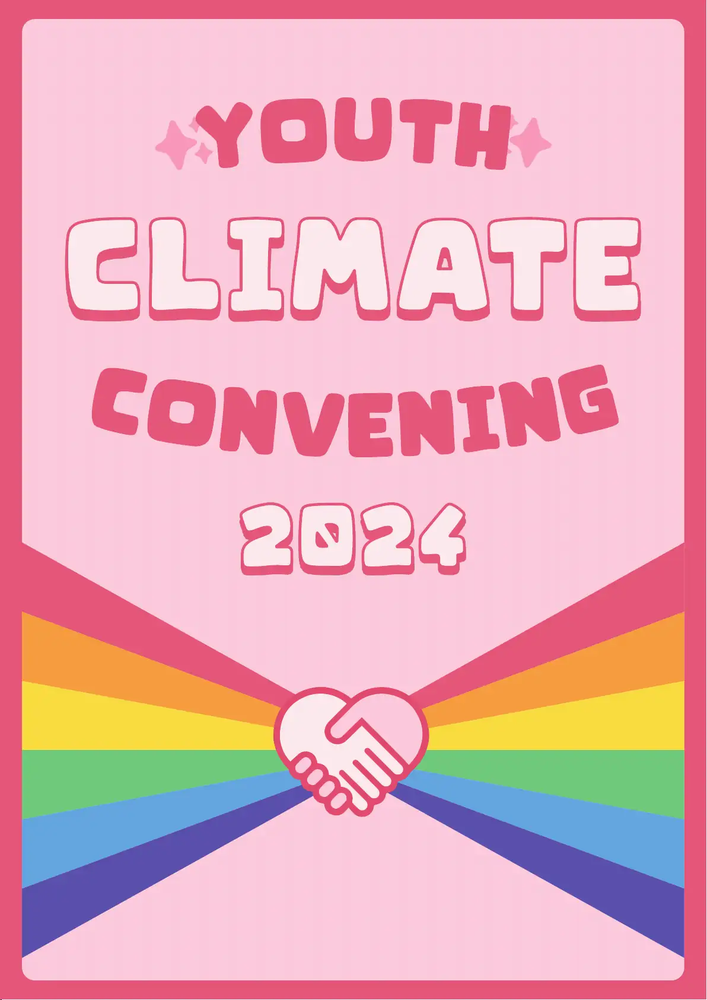
CLIMATE
Y
O
U
T
H
C
O
N
V
E
N
I
N
G
2024
POST EVENT REPORT
DESIGNED IN CHANDRA’S MEMORY
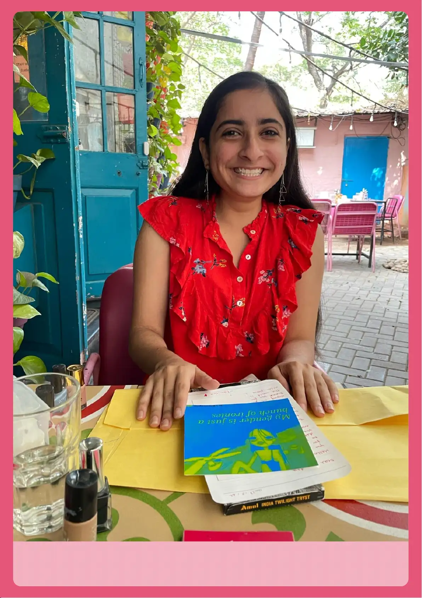
CHANDRA IS, AND WILL BE REMEMBERED
AS A QUEER ACTIVIST, CHOCOLATE LOVER & FOR BEING THEMSELVES
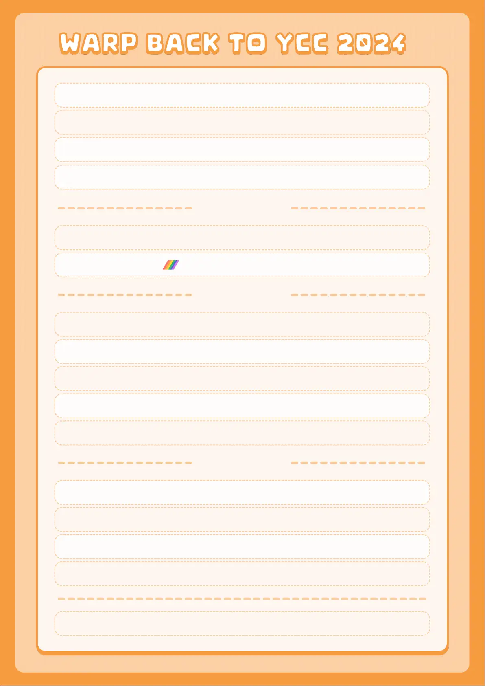
WARP BACK TO YCC 2024
Executive Summary & Introduction 01
Purpose of YCC 2024 03
Agenda for YCC 2024 04
Participating Groups at YCC 2024 07
DAY 1 · 5 JAN
DAY 2 · 6 JAN
POSH & Wellbeing Workshop 14
Community Agreements 16
Work Showcase 17
Challenges for Climate Campaigners 21
DAY 3 · 7 JAN
Community Identity 25
Breakout rooms 27
Outcomes & Future Scope 29
Reflection & Testimonies 31
Opening Circle 10
Chandra’s Memorial 11
Rapid Coordination 22
YCC Recapped 34
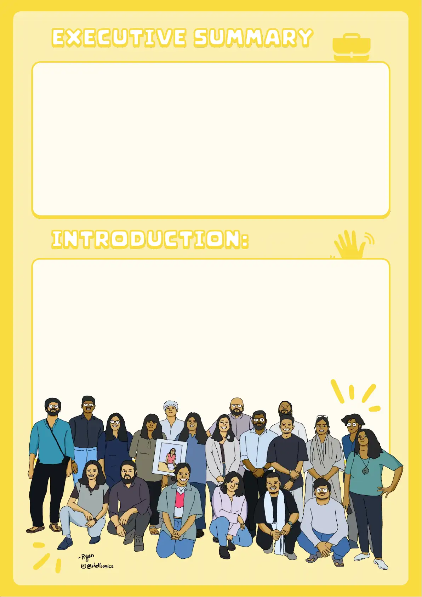
To unite together in one place, with shared values and vision to discuss a
solution-centric approach to environmental issues in India, a three-day
event — The Youth Climate Convening (YCC) 2024 — was hosted on 5-8th
January 2024 at Fireflies Intercultural Center, Bangalore. Twenty young
people working towards climate justice were present, representing various
campaigns, organisations, and indigenous youth groups.
With workshops, group sessions and showcases, the movement addressed
challenges that young people in the Indian climate justice movement face,
and worked towards inculcating entrepreneurship, capacity building and
sustainable collective action. and other follow-up steps until the next YCC.
EXECUTIVE SUMMARY
01
India is placed in almost every list curated in Global Climate Risk Index
2021 which maps out to what extent countries and regions have been
affected by impacts of weather-related loss events.
The remote nature of India’s climate movement means it is difficult to
collectivize, unite together and realize climate action. To address this, the
Youth Climate Convening was attended by individuals and their groups at
Fireflies Intercultural Center, Bangalore in January 2024. This year, the
focus was on showcasing diverse work that people engage with and form
a community identity through reflection, discourse, and action.
INTRODUCTION:

02
For many, especially younger participants, the convening was a place to
resonate with likeminded views, express yourself (knowing that the people
here accept you, not judge) know that they aren’t alone in the work they
do, and strengthen their resolve in working towards climate justice (now
that they were aware of the community they share a lot in common with).
I never thought that I would be a
part of leadership or this role [of
realizing climate action] but I have
seen some things from my own
[indigenous] communities that made
me take the step forward and do the
things I want to happen, rather than
expecting someone to do it for me.
I inspire myself from people in this
community and what that they do,
and continue my work with positive
vibes along the way.
- PRAKASH,
STEP OF INSPIRATION
The convening’s scope wasn’t limited to just climate-centric work. It was
also about people, how they feel, and what they are going through.
The activities where we shared
problems, where we were able to be
vulnerable with each other […] I like
the fact that people were able to be
vulnerable. At least, that space is
given to us.
Maybe I am not choosing to be
vulnerable today, but I know this
space is going to be there. I can
come back to this space whenever I
want to.
- DEEPTI,
YOUTH FOR CLIMATE INDIA
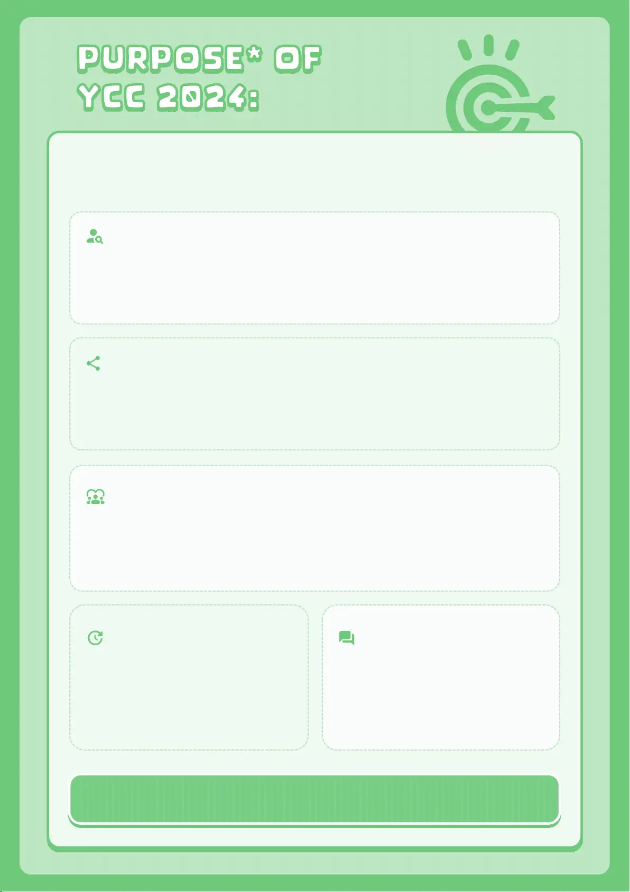
PURPOSE* OF
YCC 2024:
*As collectively discussed and agreed upon, while working towards a shared vision
and network charter in the Opening Circle held on 5 January 2024.
REFLECT ON YOURSELF
Utilize the convening for sharing your achievements and challenges
faced in last year and perceive things differently than more experienced
people in the movement.
SHARE & COLLABORATE
Express your experiences and share your learnings so all participating
groups can work together, plan and establish collective objectives for
the upcoming year. See: Rapid Coordination
UNITY IN DIVERSITY
Foster the Youth Climate Convening as an inclusive platform for diverse
movements and people, one that encourages climate movements to
work towards social justice.
KEEP EVOLVING
Identify, understand and fulfill
the growing and ever-changing
needs of the participants and
the people.
ONE PLATFORM
Enable a common ground for
intra-group discussions and
intersections, to identify pain
points and address them.
The sessions planned for YCC 2024 were influenced by the participants’
expectations, wants, and needs from the convening, as listed below:
03
ON THE AGENDA
The sessions for YCC 2024 were designed to accommodate people’s
needs and capacities, while ensuring that it served as a productive means
of establishing new collaborations and interpersonal ties among
participants. Room for adjustments, and continuous feedback ensured
most of the planned sessions were well executed. Here’s an overview of
the same:
DAY 1 · 5 JANUARY · FRIDAY
CHECK-IN
• Participants’ Agreement
Tea
INFORMAL GATHERING
• Welcoming participants with icebreaker
A quick round of intros for all participants · 30 Min
• Chandra’s Memorial
Remembering Chandra, and sharing experiences · 90 min
Dinner
DAY 2 · 6 JANUARY · SATURDAY
OPENING CIRCLE
• Welcome & Introduction
Informal introductions, with overview on YCC · 10 min
• Agenda for YCC 2024
Detailing the convening’s planned events · 10 min
• Community Agreements
Setting code of conduct to be followed at YCC · 20 min
Breakfast
P. T. O
04
WORKSHOP
• POSH Policy and Wellbeing
A workshop on ensuring safe workplaces · 60 Min
Tea
WORK SHOWCASE (FIRST HALF)
• Showcase campaigning journey, challenges faced, recap 2023 and
share internal processes
• Rotaract Club of USME
• Youth For Climate India
• Climate Front India
• There Is No Earth B
• Amche Mollem
• Nitara · 90 Min
Lunch
WORK SHOWCASE (SECOND HALF)
• Showcase campaigning journey, challenges faced, recap 2023 and
share internal processes
• The Adivasi Post
• Step of Inspiration
• Fridays For Future Karnataka
• Let India Breathe
• Fridays For Future India · 75 Min
RAPID COORDINATION
Request for resources, set up collaborations, pitch solutions and offer
support · 60 Min
P. T. O
05
DAY 3 · 7 JANUARY · SUNDAY
COMMUNITY IDENTITY
• Part 1: Reflection
Sharing personal problems faced · 20 min
• Part 2: Breakout Rooms
Splitting in teams of 4 & shaping the movement’s identity · 10 min
• Part 3: Summarize Parts 1 & 2
Recapping takeaways from the sessions held · 20 min
Breakfast
Lunch
OUTCOMES & FUTURE SCOPE
• Prioritizing follow-up Call To Acts
Listing pain points and prioritizing support for each · 30 min
FEEDBACK SESSION
• Collecting Individual Feedback
Understanding the convening’s experience for participants · 30 min
DAY 4 · 8 JANUARY · MONDAY
Breakfast & Check-outs
The agenda for the Youth Climate Convening 2024 was planned with
participants’ capacity in mind, with day one and four reserved mainly for
check-ins and check-outs respectively.
Days two and three were designed for the aforementioned sessions –
focusing on problems faced by participating groups and ideating future
collaborations – with flexibility in mind, which allowed scope for on-the-fly
changes to the schedule based on participants’ feedback and timings.
Ample buffer time and stringent time economies ensured that most (if not
all) sessions ended on time, freeing up the evenings and nights for the
participants to socialize and connect with others outside of work.
06
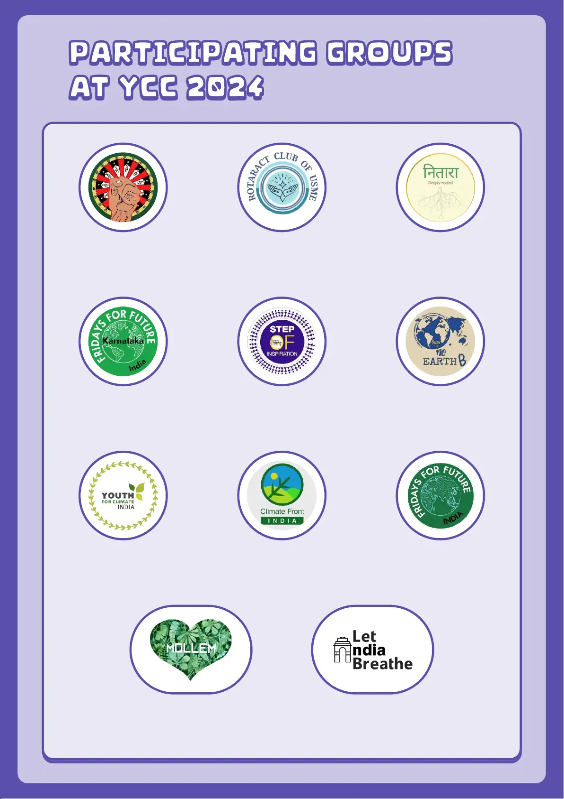
07
THERE IS NO
EARTH B
(NITARA)
FRIDAYS FOR
FUTURE INDIA
STEP OF
INSPIRATION
ROTARACT CLUB
OF USME
CLIMATE
FRONT INDIA
FFF
KARNATAKA
THE ADIVASI
POST
YOUTH FOR
CLIMATE INDIA
AMCHE
MOLLEM
LET INDIA
BREATHE
PARTICIPATING GROUPS
AT YCC
2024
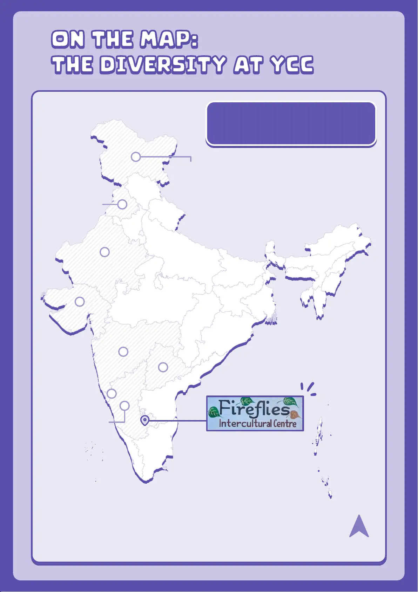
ON THE MAP:
THE DIVERSITY AT YCC
JAMMU
& KASHMIR
PUNJAB
DELHI
TELANGANA
RAJASTHAN
GUJARAT
GOA
YOUTH CLIMATE
CONVENING 2024
KARNATAKA
MAHARASHTRA
MAP NOT TO SCALE AND FOR REPRESENTATIONAL PURPOSES ONLY
N
08
HEADS UP: This is just the second iteration
of the YCC. More representation, esp. from
North-Eastern states is on the way!
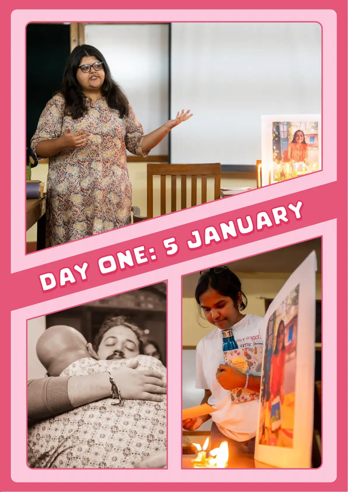
DAY one: 5 JANUARY
09
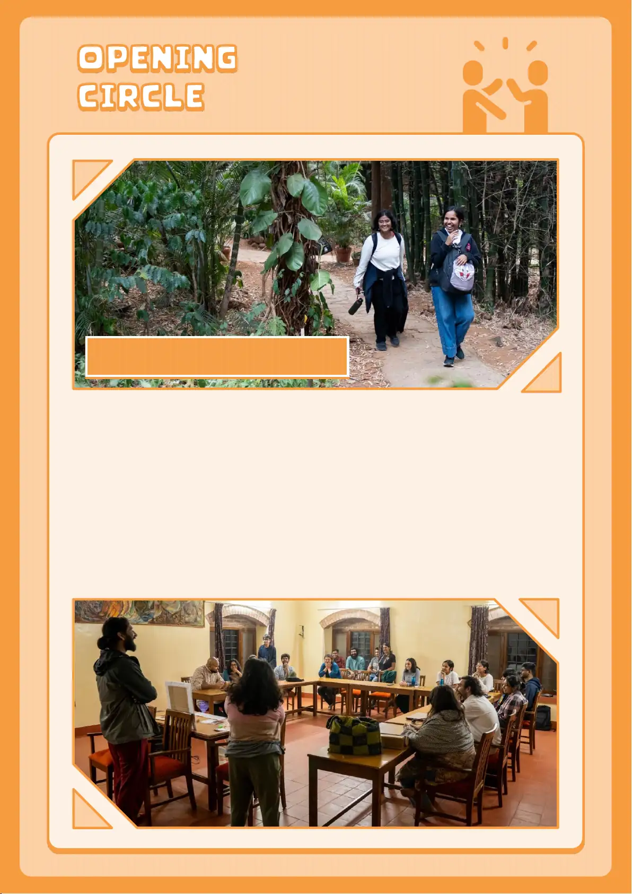
OPENING
CIRCLE
For the first day of the convening, the intent was for people reach the
venue and get enough time to rest so we can start sessions the next day.
Hence, activities were limited to introductions & Chandra’s memorial.
Once most participants had checked-in the venue, an opening circle was
facilitated by the organizers to familiarize the participants with the Youth
Climate Convening’s purpose, agenda and offer room for each person to
introduce themselves (w.r.t an animal they resonate with the most,
keeping things lively and informal) and share their expectations and
needs from the convening.
10
As you’ll soon understand, day 1 was a
rollercoaster of smiles like these… and tears.
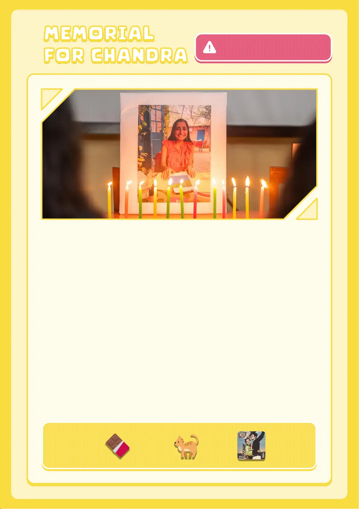
ALWAYS ON
CHANDRA’S
WISHLIST:
lots & lots
of dark
chocolate
adoring
cats &
forests
Lana Del
Rey on
repeat
TRIGGER WARNING
Mention of death by suicide
11
The Youth Climate Convening created a space to remember and know
about Chandra (they/she/it). In January 2023, they died by suicide.
Chandra was a queer climate activist who always stood by people and
extended their warm and loving heart. The communities enduring most of
the climate crisis, their online friends, strangers, rivers and forests, cats
and dogs, and their family have always been helped and touched by their
warmth and efforts at seeking justice and a fairer world, the very one
which they were denied.
They believed that the climate crisis requires us to work as one large
community of the lovers of the world. They worked on forest and river
movements, mutual aid for queer and trans persons, fostering safe and
inclusive climate justice spaces by highlighting ableism, being a part of
the larger climate justice and social justice movements. Without
community and people, we are stranded alone and helpless. The light that
they brought in this world shall not dim, our community will uphold it and
make space for everyone. And that’s evident in how they helped us all be
at our most vulnerable and open up during the convening.
MEMORIAL
FOR CHANDRA
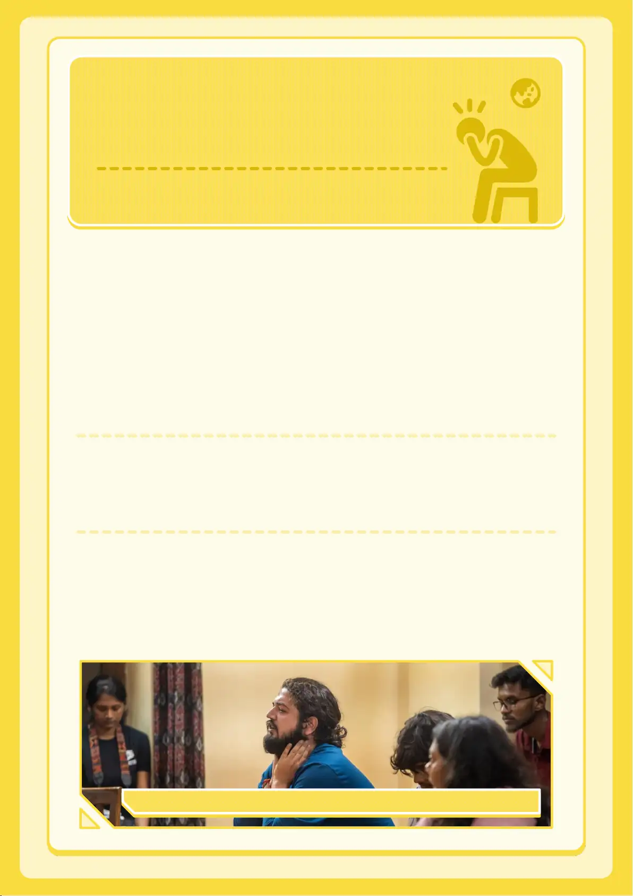
12
With a systemic issue as massive as climate crisis, choosing to take action
on it is a brave step, but also an exhausting and stressful one at that.
Burnouts were dangerously common among participants, and even more
so among those in leadership and/or coordination roles. As reflected in
day 3’s community identity session, mental breakdowns and feeling of
isolation and hopelessness stood out as prominent struggles for most.
During the second half of Chandra’s memorial, several participants – who
tend to struggle with sharing the things they go through – shed tears, as
they opened up and shared their struggles.
75%
OF YOUTH SAY
THE FUTURE IS
FRIGHTENING
56%
OF YOUTH FEEL
THAT HUMANITY
IS DOOMED
45%
OF YOUTH SAY
CLIMATE CRISIS IS
ANXIETY-INDUCING
As per a 2021 Survey led by Bath University, across 10 countries.
Source: The Hindu · 21 April 2023
“… souls forge ties over pain and sorrow when you let yourself cry,
For tears are like wax drops that hold a candle up once they solidify.”
Kanselia · Alone Together
Worry about sustaining self both financially and morally, coping with eco-
anxiety, depression and lack of accessible people who can understand
what you go through (given the remote nature of the movement’s work)
were some points raised by participants, in what enabled everyone to
know where each person is coming from and empathize with them.
Chandra made people open up, cry, air their feelings, and have them heard.
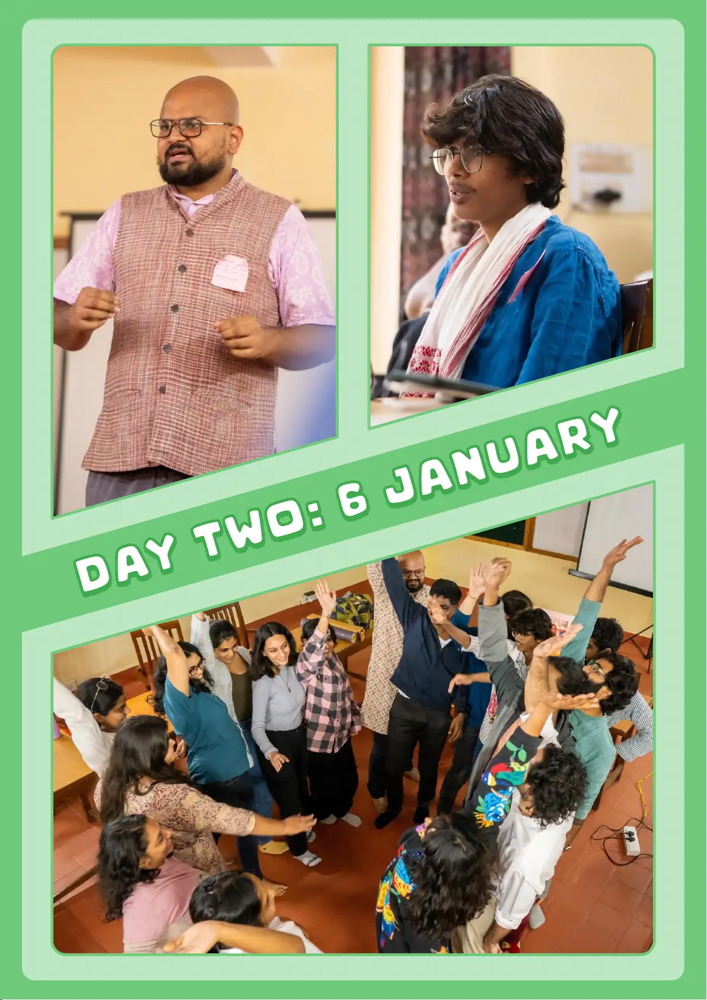
DAY TWO: 6 JANUARY
13
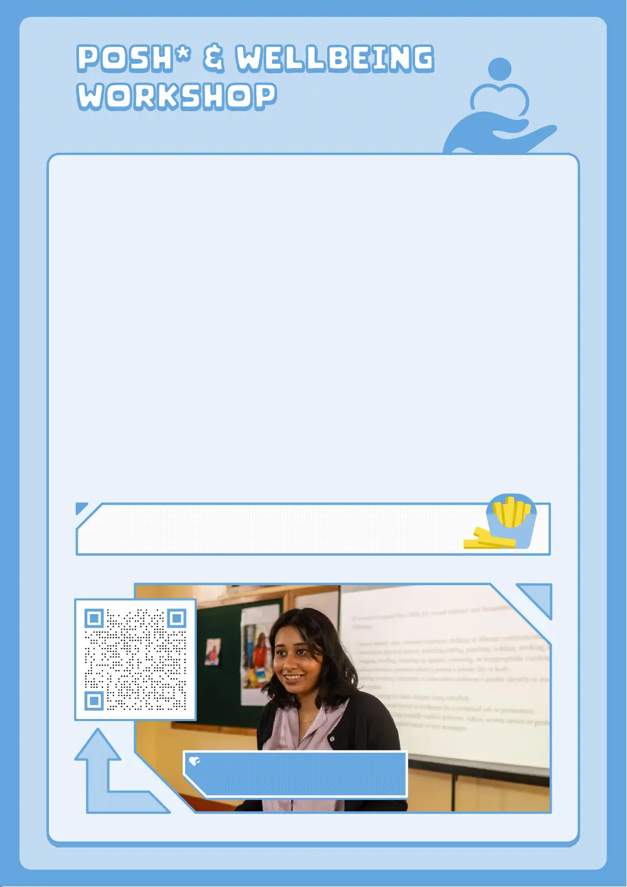
POSH* & WELLBEING
WORKSHOP
*POSH: Prevention of Sexual Harassment (& Bullying)
14
Day two marked the official start of events, and marking its start was a
unique workshop dedicated to ensuring and promoting a safe
community.
To help participants – especially younger ones – to understand the laws
and acts around their workplace safety, the YCC had a conversational,
open session on POSH and wellbeing i.e., a space where participants were
as communicative as the speaker. After providing context into what
makes a workplace safe and what doesn’t, the session dived into action
points on how to identify and report an instance of bullying, sexual
violence and/or harassment (for which the youth movement has a zero-
tolerance policy for), plus viable recourses for a person to take.
As for takeaways, the movement acknowledged a need for legal support
and mental health aid for complainants and respondents. The session,
also set an easy-to-adapt blueprint for participants to follow and carry
forward the conversation on POSH safety and wellbeing within their
organizations/groups and social circles using the deck linked below. Plus,
the session had this interesting tidbit, shared by one of the participants:
THE F.R.I.E.S METHOD OF ENSURING CONSENT:
Freely Given Reversible Informed Enthusiastic Specific
Want the deck for in-depth reading
on POSH? Just scan the QR code
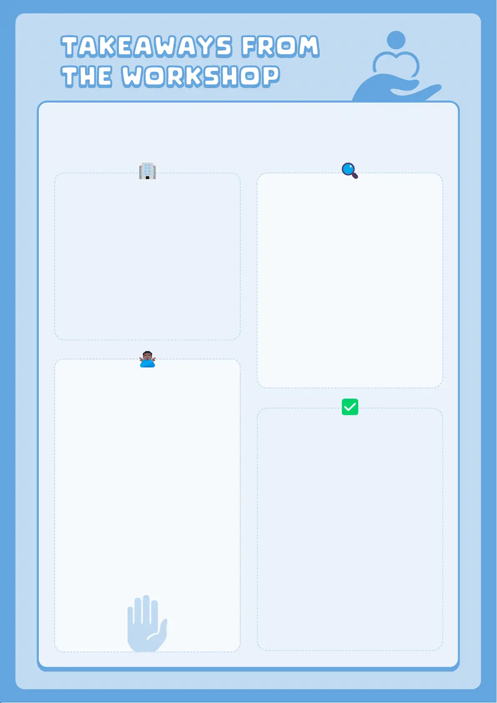
TAKEAWAYS FROM
THE WORKSHOP
15
AN IDEAL WORKSPACE
An environment in which
people come together to
achieve a shared professional
goal. It is a space that fosters
growth, productivity, harmony,
and is underpinned by
consensual and ethical
interactions within a
professional work atmosphere.
To understand the importance of a bullying/harassment-free workplace,
the workshop defined all the essentials first. Here’s a quick recap:
DEFINITION OF SEXUAL
HARASSMENT UNDER
THE POSH ACT:
• Physical contact and
advances
• A demand or request for
sexual favours;
• sexually coloured remarks;
• showing pornography
• any other unwelcome
physical verbal or non-verbal
conduct of sexual nature.
… AND STEPS TO TAKE IN
SUCH A SCENARIO
• Speak up
• Document all possible means
of evidence – screenshots,
video, photos, etc. – to
support your stance.
• Reach out to your seniors or
coordinators to address any
harmful behaviour
• Seek mental health support
from your friends, therapist
and other possible means
SOME SIGNS TO SPOT
AN INSTANCE OF
BULLYING AND/OR
HARASSMENT…
• Your or a person’s consent
and choices are invalidated
• Your personal boundaries are
not being respected
• There’s an imbalance in the
power dynamic between you
and the other person
COMMUNITY
AGREEMENTS
Before proceeding with the sessions ahead, a quick round of check-ins
was held to set some rules to value people’s presence & preferences.
ON TRIGGER WARNINGS
Give clear, specific, and concise
trigger warnings. Refrain from
sharing too many details at
once, and wait a bit for people
to understand the warning and
opt to stay or leave the space.
RESPECT THE SET
TIME ECONOMY
Follow time limits stated by the
organizers before each event.
BE EMPATHETIC AND
NON-JUDGEMENTAL
Avoid labelling people based on
first impressions and do your
best to understand them.
PRIORITIZE YOURSELF
Should you feel overwhelmed or
just unwilling to be in the space,
feel free to walk out and return
at your own pace.
KEEP THINGS SIMPLE
Break complex jargon down to
simple, everyday words where
possible. Keep use of technical
terms to the minimum.
ENSURE THERE’S SPACE FOR YOU, AND OTHERS
Do not hesitate to take up your space and have yourself heard; the
climate justice movement is for everyone. Allow and enable others do
the same too. While you are at it, break down patriarchal notions and
ensure there’s less of mansplaining (i.e., explaining something obvious,
often to a female person) and more of equal exchanges.
TALK, LISTEN AND
SHARE WITH PEOPLE
Engage with people with talks
outside of work and connect on
a personal level. Just ensure
you are respectful of people’s
boundaries and interest prior.
16
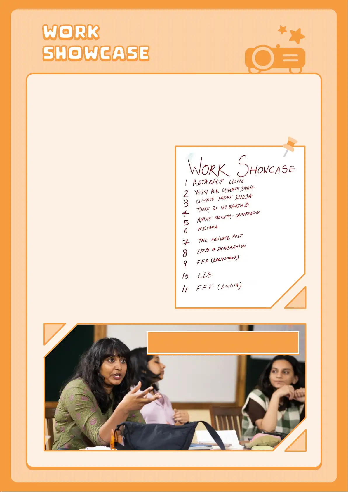
WORK
SHOWCASE
17
The longest event of the Youth Climate Convening was also its most
important one. Each participant was allotted ten minutes to share their
journey in their group as a climate campaigner, challenges faced, a recap
of 2023 including one highlight. Another five minutes were assigned for
listeners to ask questions and offer suggestions.
The work showcase helped the
participants get an in-depth
understanding of how other
movements and organizations are
working and overcoming the
challenges they experience.
In a setting where organizations
and groups are driven to compete
in isolation and are often
overwhelmed by the sheer
number of environmental issues
across India, the participants were
able to extend solidarity and
envision formation of support
systems and dealing with issues
w.r.t to leadership and exhaustion.
the showcase was the place to ask other groups
about their struggles + how they overcome them
The order for the work showcase was decided in random using chits;
here’s an overview of the session, in the same order it happened:
1. ROTARACT CLUB OF USME
Rotaract USME, the youth wing of Rotaract International works in the
domain of climate justice, self-defense, education and menstrual
hygiene through various projects and campaigns. Their focus has been
on amplification and collaborative campaigns.
2. YOUTH FOR CLIMATE INDIA
Youth For Climate India presented their journey of opening a Climate
Justice Library which is a one of its kind in South Asia. There are two
libraries - one in New Delhi and the other in Chhattisgarh. With an aim to
bridge the gap in climate literacy for the community, the library is a
culmination of efforts at resource mobilization and collective action.
Over the years, YFCI has mobilized communities for campaigns and
initiated unique ideas.
3. CLIMATE FRONT INDIA
Climate Front Foundation (CFF) highlighted their journey so far from
campaigns in Chandigarh and Jammu to opening subsequent chapters
in various cities. The highlights of their journey have been Tawi River
Front - movement to clean and save river Tawi in Jammu, Save Raika
Forest - movement to stop the destruction of 38,000 trees in Raika
Forest. Through community mobilizing online and on ground they have
reached a larger Telugu audience.
4. THERE IS NO EARTH B
There Is No Earth B (TINEB) is a volunteer-driven community aiming to
build a better world through collaborative climate action. Their methods
of campaigning include regular cleanup drives, digital outreach
strategies to convey demands regarding environmental conservation to
decision makers and utilizing technology to mobilize climate action.
During the work showcase, TINEB presented its annual report which
further detailed its initiatives w.r.t both local and national campaigns.
18
5. AMCHE MOLLEM
Amche Mollem is a citizen’s movement to protect Mollem’s forests and
foster sustainable development. Through art and science, the campaign
has been successful at building an informed & participative community.
6. THE ADIVASI POST
The Adivasi Post is an alternative journalism platform to amplify the
voices of Adivasi and indigenous communities and their issues. Apart
from journalism, the group also focuses on capacity building.
END OF FIRST HALF
7. NITARA
Nitara is a student collective which focuses on climate justice and its
various intersections. Its work so far is in the domain of climate
education, housing amid heat and cold waves for the vulnerable, mutual
aid and marginalization and offering support to community members.
8. STEP OF INSPIRATION
Steps of Inspiration works with an aim to empower the Adivasi youth
through health, education, identity, media, and skill building. Through
campaigns and events SOI is able to make space and amplify the voices
of Adivasi youth who are at the frontlines of the climate crisis.
You can say the work showcase
was the climate movement’s own
take on Shark Tank
19
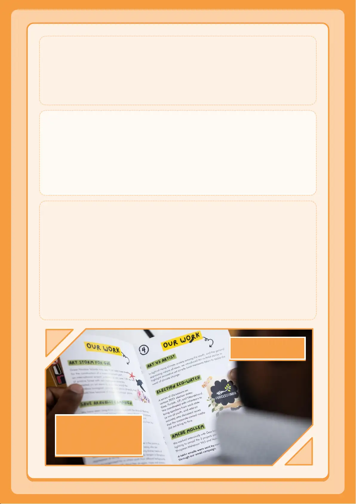
9. FRIDAYS FOR FUTURE KARNATAKA
Fridays of Future Karnataka has been engaging with the communities
on ground who are facing the brunt of the environmental crisis. Their
broader scope of work is climate education, youth engagement and
inter-movement solidarity.
10. LET INDIA BREATHE
Let India Breathe (LIB) has worked on multiple campaigns on
Environmental and Forest policy issues. Currently, it operates an active
language lab – open for all climate groups to access – which consists of
translators who help break down linguistic barriers and convey climate
campaigns in regional languages.
11. FRIDAYS FOR FUTURE INDIA
Fridays For Future India is grassroots, Indian youth-led climate justice
movement that works with its city chapters to amplify local issues and
environmental campaigns across India.
The movement has been an active part of several inter-movement
collaborations on environmental issues, and also works on highlighting
its city chapters participation during Global Climate Strikes i.e., peaceful
demonstrations of climate justice alongside multiple city chapters and
other movements/groups.
if you felt that the climate
movement was idling, boi
did the work showcase
have a surprise for you
detected: LIB’s cute
and powerful zine
20
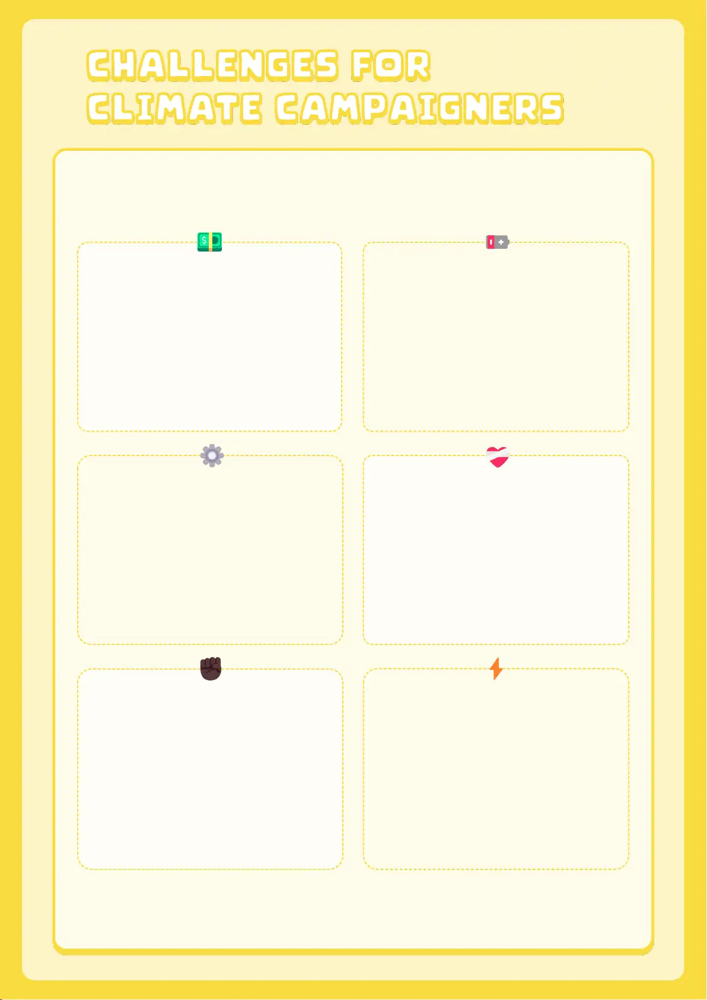
CHALLENGES FOR
CLIMATE CAMPAIGNERS
Organizations and movements participating in the showcase encountered
various challenges in their work. Here’s a non-exhaustive list:
CAPACITY BUIDLING
Volunteer retention i.e., the
ability for campaigns to retain
their volunteers long-term, was
stated as a constant challenge
considering the voluntary
nature of most campaigns.
RESOURCE CRUNCH
Most campaigners found it to be
a persistent challenge to
sustain their efforts, procure
resources for their campaigns
and retain volunteers in the
absence of adequate funds.
TECH SUPPORT
Inadequate tech resources, like
access to web designers and
tools like Canva Pro limit the
ability for campaigns, especially
smaller ones, to document their
work in an efficient manner.
ERASURE OF IDENTITY
The issue of Adivasi and
indigenous people’s identity
and its assimilation into
mainstream narrative raised
questions about cultural
preservation issues and
inclusion for the movement.
ON-GROUND
MOBILIZATION
Given the remote nature of
many campaigns, engaging and
empowering local communities
poses a challenge requiring
constant efforts.
OTHER CHALLENGES Administrative book-keeping, documentation of
campaigns, and fear of state surveillance.
21
LACK OF MENTAL
HEALTH RESOURCES
With burnouts, eco-anxiety and
isolation being commonplace, a
need for sustained mental
health support is a necessity for
the youth climate movement.
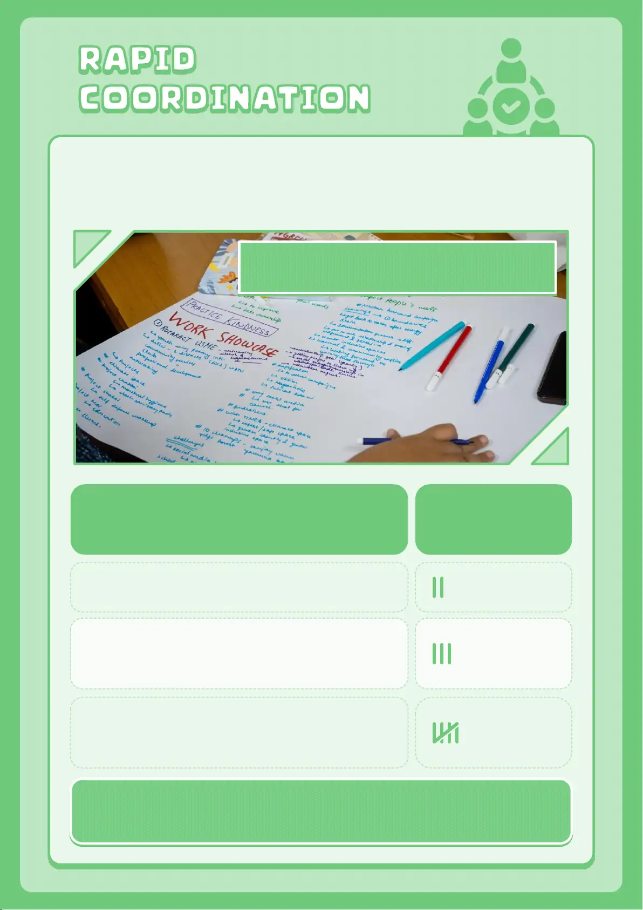
RAPID
COORDINATION
22
Post the work showcase, where participants expressed their past work
and challenges, a quick round for extending support on issues was held,
where each group shared their issues for other groups to assist with.
SUPPORT
RECEIVED FROM
OBJECTIVE PITCHED
BY PARTICIPANTS
Mapping processes for self & community care
Fundraising Techniques and
Financial Management (Accountancy)
Tech Support (Website Design & Maintenance,
Social Media, and Graphic Design)
Rapid coordination led to the idea of creating a
working group for volunteer management & retention.
QUICK MATH CRASH COURSE:
Each line denotes support received from one group/individual. The ones with
the diagonal strike-through? Those indicate support from five groups/individuals.
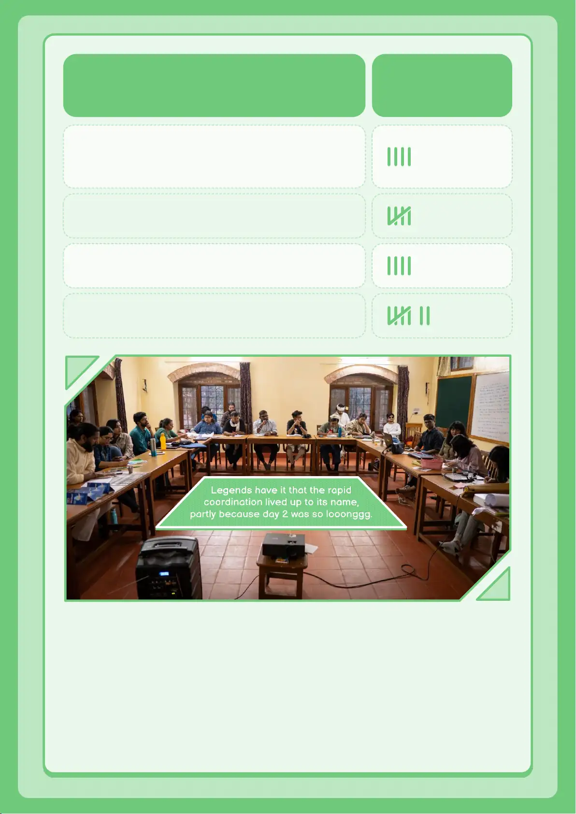
SUPPORT
RECEIVED FROM
OBJECTIVE PITCHED
BY PARTICIPANTS
Documentation of processes involved in a
group’s campaign (Visual & Written)
Network building for climate education
Volunteer management & retention
Capacity & Knowledge Building
The rapid coordination rounds served as a productive follow-up (and as a
fitting closure for day two’s campaign-centric focus) for the issues
participants raised during their work showcases and was followed with a
strict time economy to avoid delays.
Capacity building in terms of volunteer retention, mental health support,
and educating people about aspects of effective campaigning (such as
outreach, inclusivity, etc.) was the top priority for most groups, followed
closely by technology support to facilitate digital campaigning.
23
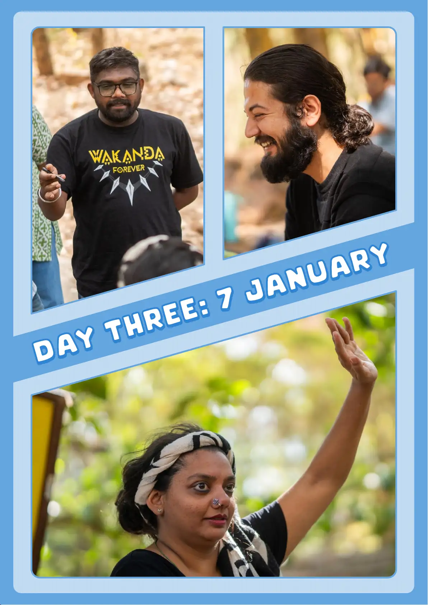
DAY THREE: 7 JANUARY
24
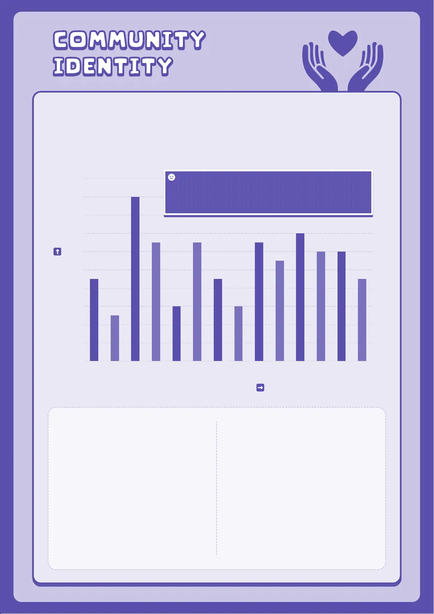
COMMUNITY
IDENTITY
Day three started off with a personal reflection, where the organizers
asked all participants to express their personal issues anonymously via
chits, with each issue followed by a show of hands denoting the number
of people facing similar experiences.
0
2
4
6
8
10
12
14
16
18
20
1 2 3 4 5 6 7 8 9 10 11 12 13 14
WHERE ARE WE NOW? (SEE INDEX BELOW)
NO. OF PEOPLE
FACING
IT
1. Leadership Isolation
2. Irritation towards
community coordination
3. Emotional Breakdown
4. Time Management
5. Fear of underperforming
6. Overcommitment
7. Learning to take breaks
8. Feigning hope and
enthusiasm for others
9. Financial Adjustment
10. Mental health issues
11. Unhealthy family dynamics
12. Lack of motivation
13. Key person risk
14. Lack of leadership training
25
90% of participants said that they face emotional
breakdowns while campaigning (& lack of access to
mental health resources worsens the issue)
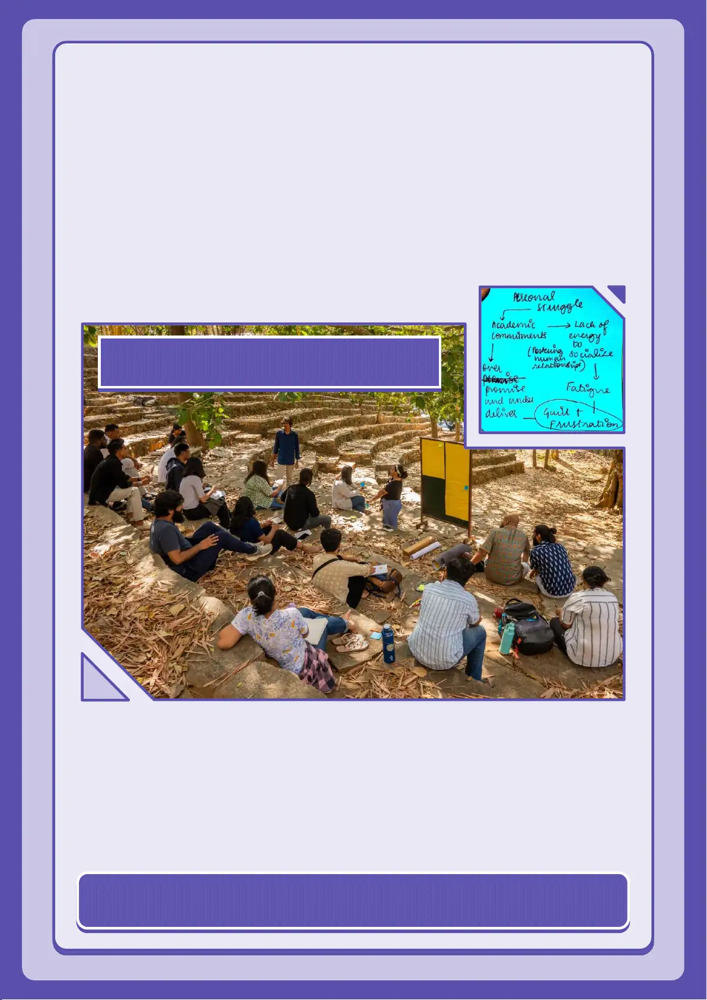
The session brought a sense of togetherness among the participants. A
long-drawn reflection on the youth climate justice movement as a
community of people and how individually the participants engage with
the space and how they define their journey. The participants highlighted
the upsides and downsides of being in the climate justice movement.
Emerging themes included leadership isolation, emotional breakdown,
time and financial management to balance activism and personal life,
hopefulness and its pretense, generational trauma that also emerges from
socio-political scenarios, love within the community, healthy work-life
balance, and unreliable dynamics within movements.
This exercise highlighted that the participants resonated with what
individuals feel and face within the youth climate justice movement. The
21st century’s polycrisis* is unique and thus the approach that the youth
adopt differs from what the elders in the community adopted years ago,
thus, the focus on mental health and individual physical and mental
wellbeing (which also determines community wellbeing) has become of
prime importance to deal with an ailing world.
If day 2 was about campaigning and strategizing, day
3 was all about community and listening to each other.
26
*refers to a phase where multiple crises unfold at once, such as (but not limited to)
wars, climate crisis, erosion of democracies, and AI-fueled disinformation.
For young volunteers, remote climate activism has a cost →
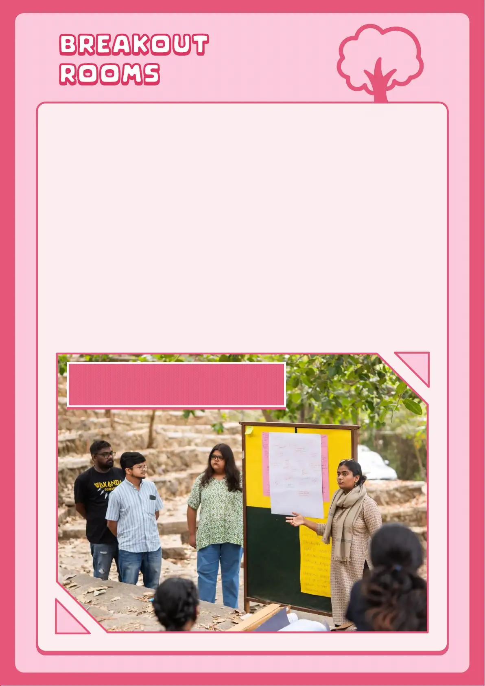
BREAKOUT
ROOMS
The session on community identity then divided itself into four breakout
groups (to encourage building new ties, comprising of people who
interacted least with each other in the convening) to define the purpose of
our community within the youth climate justice movement. The groups
charted the strengths, superpowers, opportunities, visions, and
drawbacks of the community which is made up of young people.
Belongingness, radical love, healing, unity, talent, annihilation of
oppression, hope, social justice, support system for self and others, inter-
movement solidarity, trust, friendship, care, decolonization and
debrahmanization and centering unheard voices.
The community members were able to map out their individual role within
the community and see themselves as a part of the larger movement.
Imagining a fairer and just world together is not only hopeful and poetic
but also visionary which helps the movement introduce interventions
which do not alienate the self from the movement.
Each group of four was given 20 minutes to
prepare charts that define the identity of the
climate justice movement in India & present them.
27
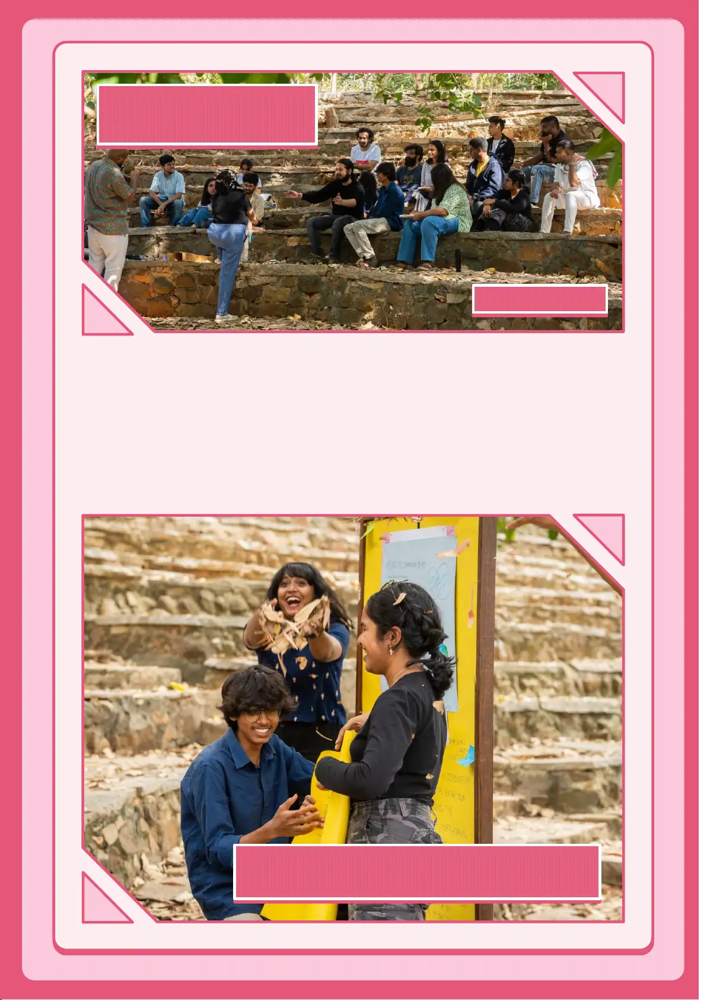
In line with day three’s theme, the breakout rooms were to be informal
presentations, but that didn’t stop the groups from competing and
bringing their best foot forward. With relatively unknown people working
together, ideas flowed from and across different topics and experiences,
to then converge onto the chart papers. Some groups depicted the
movements with flowcharts. Others opted for cute illustrations and
listicles. But the idea for one diverse community was common among all.
Some had a dry-leaf-confetti-powered intro to start their
presentation, and more smiles than actual talking. Perfect.
The organizers made it a point to
make groups of people who least
interacted with each other…
… and it was a hit!!!
28
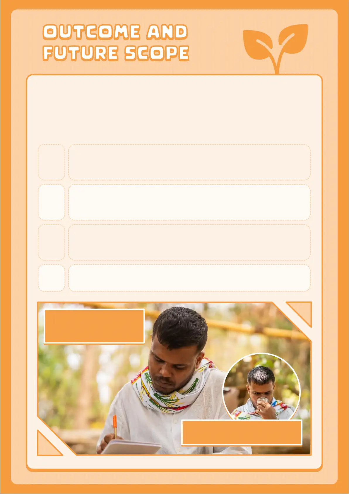
OUTCOME AND
FUTURE SCOPE
01
Formation of a channel for exchanging opportunities and gigs
with participants, related to climate action and beyond
As the convening neared its completion, a session was held on prioritizing
the call to acts – derived from the work showcase and rapid coordination
from day two – to be followed through 2024 until next convening. The list
below lists core objectives, arranged as per a mutually agreed upon
priority ranking in descending order:
02
Mapping collectives that are structured, secure, accessible and
are trusted spaces
03 Setting up different levels of network and communication
04 Cultural archive for social justice & activism
29
The call-to-acts were based
on participants’ observations
& wants from the convening…
…which involved lots of note-taking
and of course, lots of chai breaks
Okay, so our talented artist behind this masterpiece got the
spelling wrong. But they still cover the main purpose of
having this convening – and the community – pretty well.
10 Working group meetings
11 Non-work, check-in calls & sessions
12 Community workplace agreements & ethics
13 Rewind/Recap Video
05 Tech team for outsourcing & capacity building
06
Shared ICC/POSH Committee among campaigns for capacity
building & community’s wellbeing
07
Common, accessible infrastructure/resources for different
aspects of campaigning
08 Mapping redundancies and bridging overlaps
09 Rapid communication channel for emergencies
30
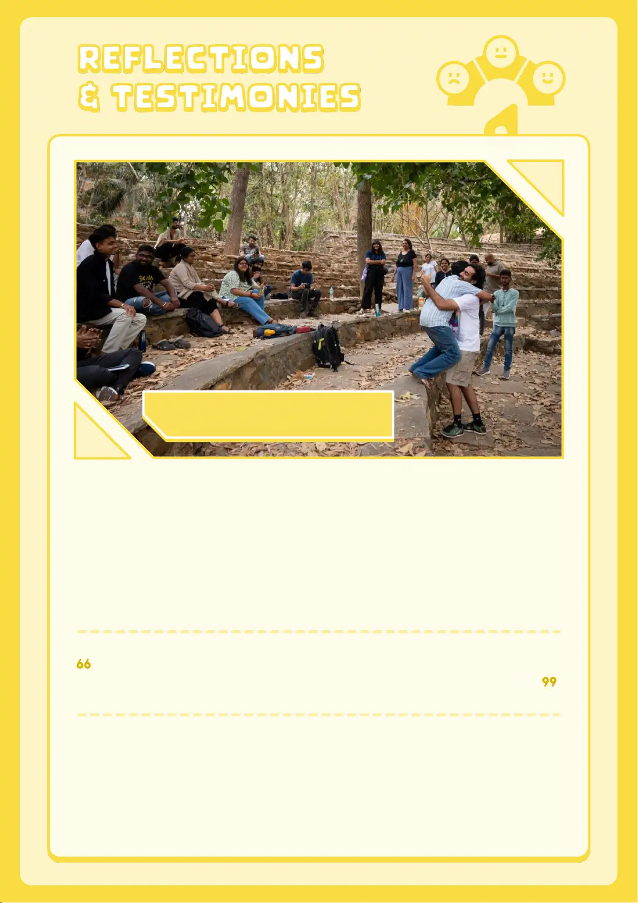
REFLECTIONS
& TESTIMONIES
The Youth Climate Convening concluded with a reflection session which
focused on meeting the expectations of the attendees, the highlight of
the convening and to brainstorm how the convening can be made better.
The participants noted that most of their expectations had been met
throughout the convening in terms of the organizing, safety, commute
and communication (more on this in next page). Day two’s work showcase,
and day three’s community identity sessions emerged as major highlights.
31
Of course, on a day meant for community,
you can’t let the hosts talk for too long
This session also set the need to challenge dominant structures and
paradigms of overworking. to fully realize the impact of climate action,
there is also an urgent need to examine climate change through the lens
of gender, caste, class, and disability and a point was observed to make
the YCC more inclusive and diverse in its next iteration.
I’m excited to collaborate and figure out how to create that [sustainable
and just] future, and create conversations around that future together.
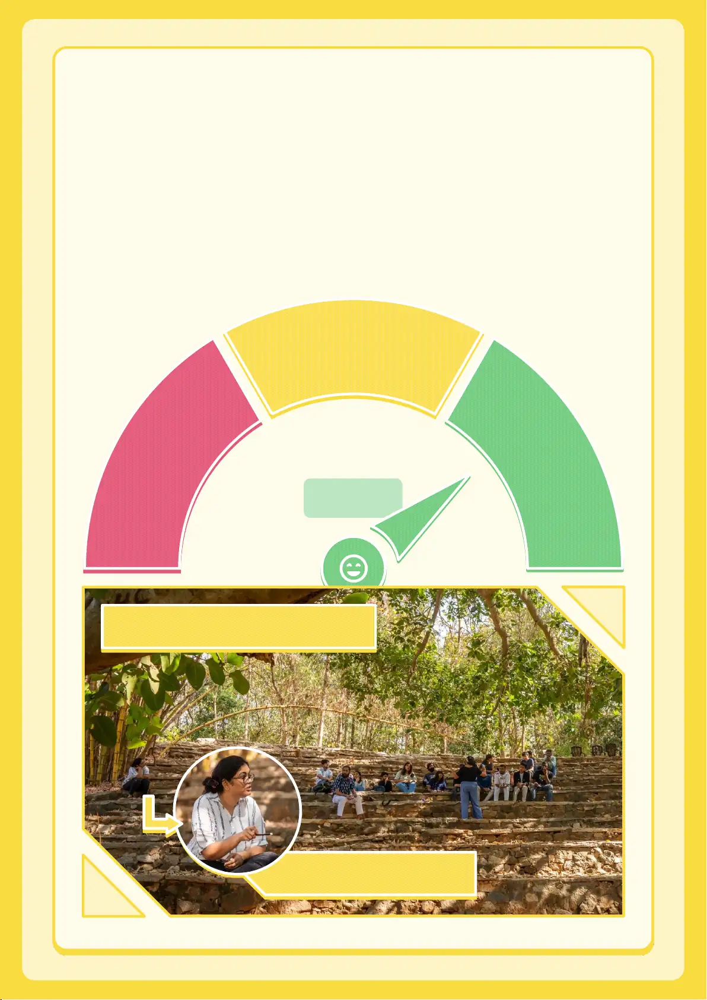
7.5
00 10
05
day 3 was all about being in the open, and
you doing the talking > than organizers…
…even as you were defying the
very limits of introversion itself
For the organizers, the reflection session was the perfect place to
understand how effectively the convening was planned and executed
(hint: flawlessly). The strict maintenance of time limits helped most of the
sessions wrap up on time, without compromising on follow-up sessions.
Constructive criticism was on offer as well, with some stating the need for
more team-based sessions like the breakout rooms for building ties with
people across several movements and groups.
And should you want a quantified gist of how the participants felt, here’s
how they rated the convening, on the scale of 1 to 10:
AVERAGE RATING
ON YCC 2024
31
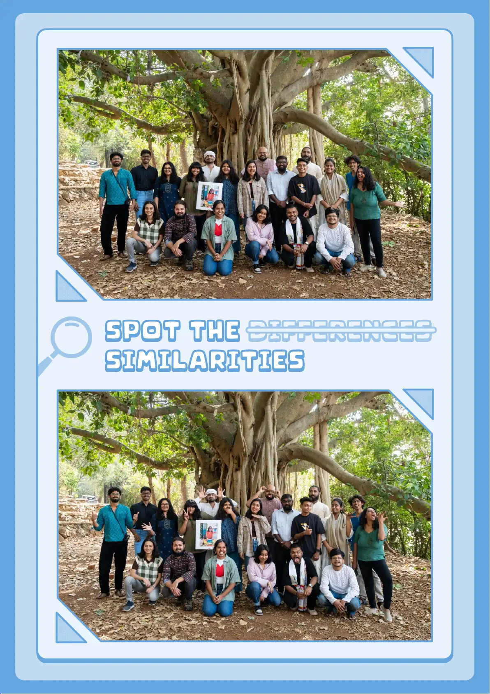
SPOT THE
DIFFERENCES
SIMILARITIES
33
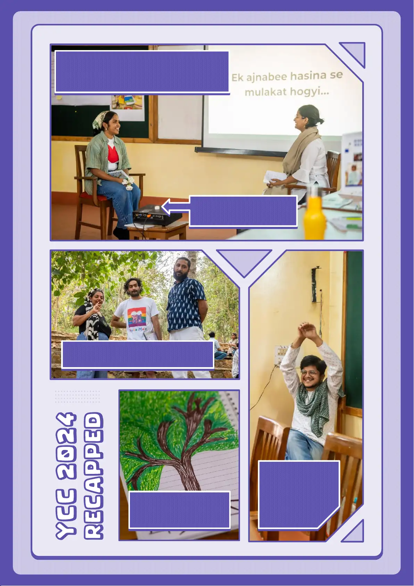
The work showcase was supposed to be this
serious, long business-y thing (which it was);
but TINEB lightened it up with a mock date*
He was unwell for the
first 2 days of YCC,
but he didn’t
let that stop him from
being, well… sick
(sori)
Ed’s Theory: the organizers just saw the
facilitator expenses beat their estimates
YCC 2024
RECAPPED
Day 2 was intense, but
also brought out the
best among one of us
34
*feat. a candlelight dinner.
(attention to detail, y’all)
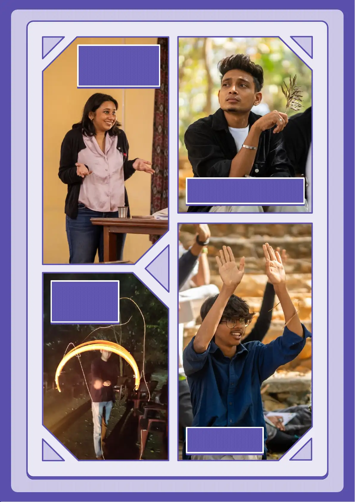
PoV: Climate activists,
asked about
their stress-coping
mechanisms
And this kids, is how you do a
candid (hint: you don’t even try)
maybe burnouts
were too relatable
ICYMI*, the bonfire
night doubled up as
a manual mode
photography sesh
exposure/shutter
-speed:
2 sec
*In Case You Missed It
35
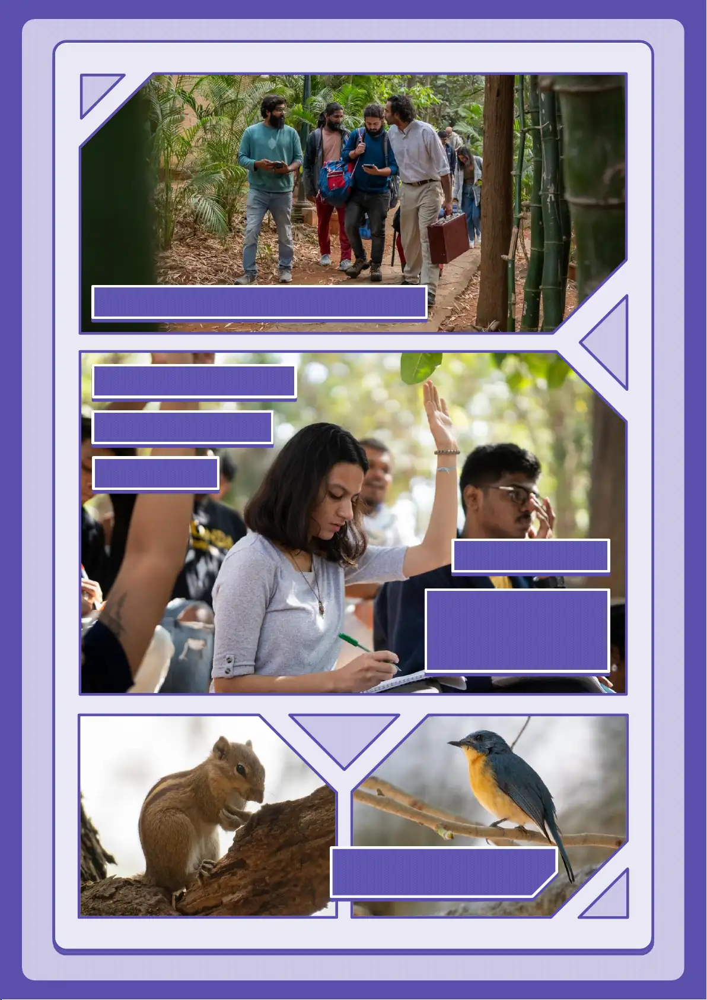
And the award for the classic-est briefcase goes too…
… ANNDDD participating
in sessions (that’s whut our
note-takers did throughout
YCC; sorcery, we agree)
Filtering out unwanted noise…
…Isolating subject voice…
…taking notes…
Detected: s’more stakeholders
of the future tuning into day 3.
…enduring back-pain…
36
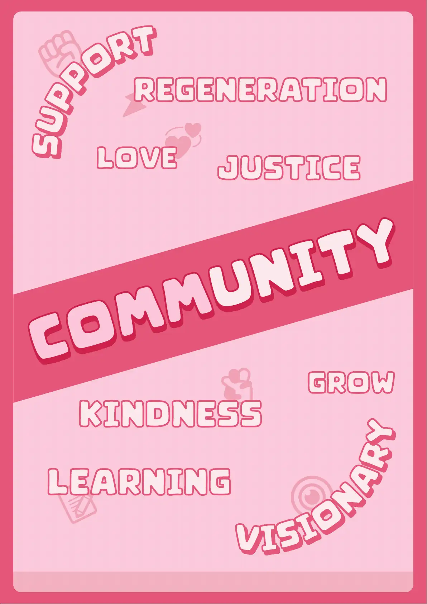
COMM
UNITY
KINDNESS
RADICAL
HOPE
JUSTICE
REGENERATION
S
U
P
P
O
R
T
connect
cry
open up
safe space
V
I
S
I
O
N
A
R
Y
DREAM
LOVE
unlearning &
LEARNING
GROW
Jai Johar!
Jal, Jangal, Zameen
REPORT PUBLISHED BY PLURIVERSITY SOLUTIONS(OPC) PVT. LTD.